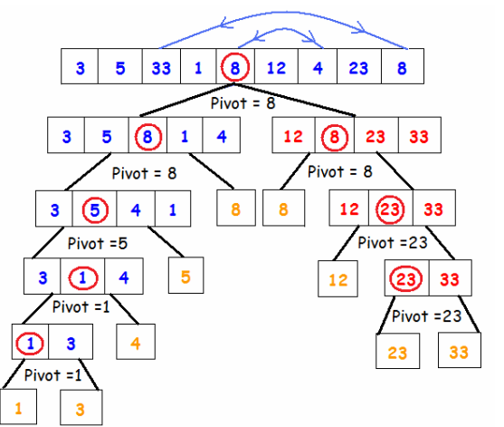

Metodo de selección
Características:
• Su tiempo de ejecución es O(N2) para el mejor, peor y caso promedio.
• Es el más fácil de codificar de los mostrados en este documento.
• Si el array de datos es A y su tamaño es N, lo que hace el algoritmo, para cada i de [0..N-2] es intercambiar A[i] con el mínimo elemento del subarray [A[i+1].., A[N]].
• Dado que es muy simple de codificar, aunque no tiene los mejores tiempos de ejecución, es apropiado utilizarlo para arrays de datos relativamente pequeños.
notas tomadas de Sebastian Gurin.